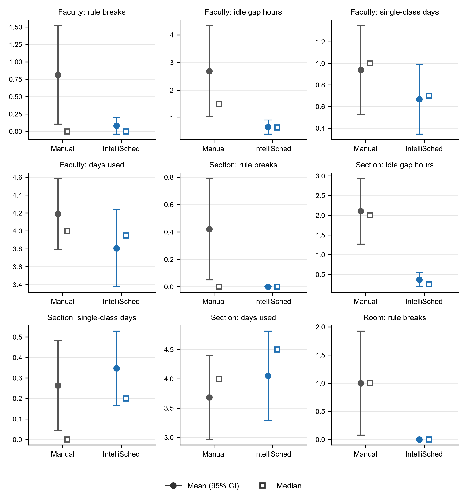
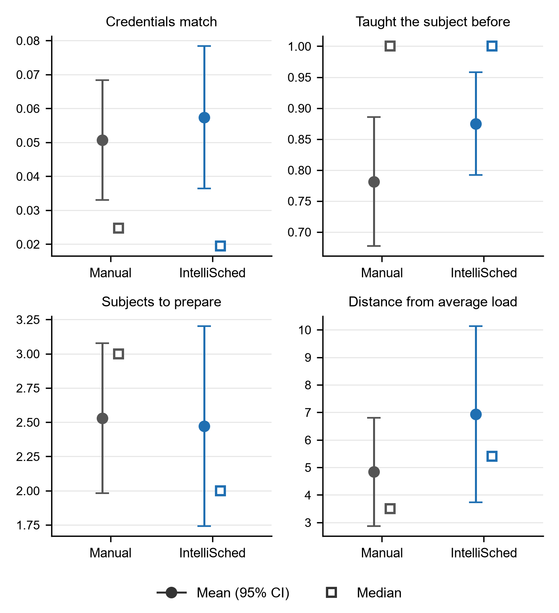
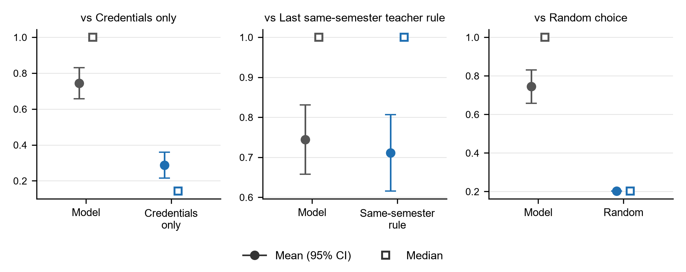

Manual scheduling vs IntelliSched, 2nd Semester AY 2025-2026
The same Phase 10 data were analysed again without collecting anything new. Each comparison is a paired-samples t-test (two-tailed, α = .05) on the same units: each teacher, section and room for the schedule (IntelliSched's value per unit is the mean of its 10 runs, with the Dean's teacher assignments kept), each class and each teacher for the faculty assignment, and each class for the ranking of the Dean's actual choice. Because several measures are tested together, significance is decided by the Holm-adjusted p within each family of tests. The effect size is Cohen's d for paired samples (the mean difference divided by the standard deviation of the differences). Each group's median and standard error (SE = SD ÷ √N) are reported with its mean and standard deviation. Measure 1 − Measure 2 is Manual − IntelliSched, or Model − simpler method for the ranking; the alternative hypothesis is Hₐ: μ(Measure 1 − Measure 2) ≠ 0. Where both groups have the same value on every unit, no test can be computed and the table shows a dash.
Table 1. Descriptive Comparison of Schedule Generation
| Measure | Group | N | Mean | Median | SD | SE |
|---|---|---|---|---|---|---|
| Faculty: hard problems per teacher | Manual | 16 | 0.000 | 0.000 | 0.000 | 0.000 |
| Faculty: hard problems per teacher | IntelliSched | 16 | 0.000 | 0.000 | 0.000 | 0.000 |
| Faculty: rule breaks | Manual | 16 | 0.812 | 0.000 | 1.328 | 0.332 |
| Faculty: rule breaks | IntelliSched | 16 | 0.081 | 0.000 | 0.223 | 0.056 |
| Faculty: idle gap hours | Manual | 16 | 2.688 | 1.500 | 3.092 | 0.773 |
| Faculty: idle gap hours | IntelliSched | 16 | 0.666 | 0.650 | 0.476 | 0.119 |
| Faculty: single-class days | Manual | 16 | 0.938 | 1.000 | 0.772 | 0.193 |
| Faculty: single-class days | IntelliSched | 16 | 0.669 | 0.700 | 0.605 | 0.151 |
| Faculty: days used | Manual | 16 | 4.188 | 4.000 | 0.750 | 0.188 |
| Faculty: days used | IntelliSched | 16 | 3.806 | 3.950 | 0.807 | 0.202 |
| Section: hard problems per section | Manual | 19 | 0.000 | 0.000 | 0.000 | 0.000 |
| Section: hard problems per section | IntelliSched | 19 | 0.000 | 0.000 | 0.000 | 0.000 |
| Section: rule breaks | Manual | 19 | 0.421 | 0.000 | 0.769 | 0.176 |
| Section: rule breaks | IntelliSched | 19 | 0.000 | 0.000 | 0.000 | 0.000 |
| Section: idle gap hours | Manual | 19 | 2.105 | 2.000 | 1.729 | 0.397 |
| Section: idle gap hours | IntelliSched | 19 | 0.366 | 0.250 | 0.367 | 0.084 |
| Section: single-class days | Manual | 19 | 0.263 | 0.000 | 0.452 | 0.104 |
| Section: single-class days | IntelliSched | 19 | 0.347 | 0.200 | 0.376 | 0.086 |
| Section: days used | Manual | 19 | 3.684 | 4.000 | 1.493 | 0.342 |
| Section: days used | IntelliSched | 19 | 4.053 | 4.500 | 1.580 | 0.363 |
| Room: hard problems per room | Manual | 7 | 0.000 | 0.000 | 0.000 | 0.000 |
| Room: hard problems per room | IntelliSched | 7 | 0.000 | 0.000 | 0.000 | 0.000 |
| Room: rule breaks | Manual | 7 | 1.000 | 1.000 | 1.000 | 0.378 |
| Room: rule breaks | IntelliSched | 7 | 0.000 | 0.000 | 0.000 | 0.000 |
Table 2. Results of the Paired Samples T-Test on Schedule Generation
| Measure | T-Test | Statistic | df | p | Holm p | Mean Difference | Effect Size (Cohen's d) |
|---|---|---|---|---|---|---|---|
| Faculty: hard problems per teacher | Student's t | — | — | — | — | 0.000 | — |
| Faculty: rule breaks | Student's t | 2.399 | 15 | 0.030 | 0.169 | 0.731 | 0.600 |
| Faculty: idle gap hours | Student's t | 2.713 | 15 | 0.016 | 0.112 | 2.022 | 0.678 |
| Faculty: single-class days | Student's t | 1.563 | 15 | 0.139 | 0.278 | 0.269 | 0.391 |
| Faculty: days used | Student's t | 2.165 | 15 | 0.047 | 0.169 | 0.381 | 0.541 |
| Section: hard problems per section | Student's t | — | — | — | — | 0.000 | — |
| Section: rule breaks | Student's t | 2.388 | 18 | 0.028 | 0.169 | 0.421 | 0.548 |
| Section: idle gap hours | Student's t | 4.161 | 18 | < .001 | 0.005 | 1.739 | 0.955 |
| Section: single-class days | Student's t | -0.884 | 18 | 0.388 | 0.388 | -0.084 | -0.203 |
| Section: days used | Student's t | -5.351 | 18 | < .001 | < .001 | -0.368 | -1.228 |
| Room: hard problems per room | Student's t | — | — | — | — | 0.000 | — |
| Room: rule breaks | Student's t | 2.646 | 6 | 0.038 | 0.169 | 1.000 | 1.000 |
Note. Hₐ: μ(Measure 1 − Measure 2) ≠ 0; Measure 1 − Measure 2 = Manual − IntelliSched. A dash (—): identical on every unit; the test cannot be computed (no variation in the differences).

Figure 1. Mean and Median of Schedule Generation. Circles are means with their 95% confidence intervals; squares are medians.
For schedule generation (per teacher, section and room), 12 paired comparisons were made between the Manual schedule and IntelliSched's schedule (the mean of its 10 runs per unit). 3 are identical on every unit (hard problems per teacher, hard problems per section, hard problems per room), so no test can be computed and there is no difference. After the Holm correction, 2 of the 9 computed differences are statistically significant: IntelliSched is better in idle gap hours per section (t(18) = 4.161, Holm p = .005, d = 0.955); days used per section differs, with IntelliSched using more days, which is not counted as better or worse (t(18) = -5.351, Holm p < .001, d = -1.228). There is no statistically significant difference in rule breaks per teacher, idle gap hours per teacher, single-class days per teacher, days used per teacher, rule breaks per section, single-class days per section, rule breaks per room.
Table 3. Descriptive Comparison of Faculty Assignment
| Measure | Group | N | Mean | Median | SD | SE |
|---|---|---|---|---|---|---|
| Credentials match of the assigned teacher (per class) | Manual | 64 | 0.051 | 0.025 | 0.071 | 0.009 |
| Credentials match of the assigned teacher (per class) | IntelliSched | 64 | 0.057 | 0.019 | 0.084 | 0.010 |
| Semesters the assigned teacher taught the subject before (per class) | Manual | 64 | 0.781 | 1.000 | 0.417 | 0.052 |
| Semesters the assigned teacher taught the subject before (per class) | IntelliSched | 64 | 0.875 | 1.000 | 0.333 | 0.042 |
| Hours over the teaching cap (per teacher) | Manual | 17 | 0.000 | 0.000 | 0.000 | 0.000 |
| Hours over the teaching cap (per teacher) | IntelliSched | 17 | 0.000 | 0.000 | 0.000 | 0.000 |
| Different subjects to prepare (per teacher) | Manual | 17 | 2.529 | 3.000 | 1.068 | 0.259 |
| Different subjects to prepare (per teacher) | IntelliSched | 17 | 2.471 | 2.000 | 1.419 | 0.344 |
| Distance from the group's average load (per teacher; balance) | Manual | 17 | 4.836 | 3.500 | 3.834 | 0.930 |
| Distance from the group's average load (per teacher; balance) | IntelliSched | 17 | 6.926 | 5.400 | 6.225 | 1.510 |
Table 4. Results of the Paired Samples T-Test on Faculty Assignment
| Measure | T-Test | Statistic | df | p | Holm p | Mean Difference | Effect Size (Cohen's d) |
|---|---|---|---|---|---|---|---|
| Credentials match of the assigned teacher (per class) | Student's t | -0.829 | 63 | 0.410 | 0.410 | -0.007 | -0.104 |
| Semesters the assigned teacher taught the subject before (per class) | Student's t | -2.553 | 63 | 0.013 | 0.026 | -0.094 | -0.319 |
| Hours over the teaching cap (per teacher) | Student's t | — | — | — | — | 0.000 | — |
| Different subjects to prepare (per teacher) | Student's t | 0.187 | 16 | 0.854 | 0.854 | 0.059 | 0.045 |
| Distance from the group's average load (per teacher; balance) | Student's t | -1.123 | 16 | 0.278 | 0.556 | -2.090 | -0.272 |
Note. Hₐ: μ(Measure 1 − Measure 2) ≠ 0; Measure 1 − Measure 2 = Manual − IntelliSched. A dash (—): identical on every unit; the test cannot be computed (no variation in the differences).

Figure 2. Mean and Median of Faculty Assignment. Circles are means with their 95% confidence intervals; squares are medians.
For faculty assignment, 5 paired comparisons were made between the Manual assignment and IntelliSched's assignment. 1 is identical on every unit (the hours over the teaching cap per teacher), so no test can be computed and there is no difference. After the Holm correction, 1 of the 4 computed differences is statistically significant: IntelliSched is better in the assigned teacher's earlier experience with the subject per class (t(63) = -2.553, Holm p = .026, d = -0.319). There is no statistically significant difference in the credentials match of the assigned teacher per class, the number of different subjects each teacher prepares, each teacher's distance from the group's average load (load balance).
Table 5. Descriptive Comparison of Faculty Recommendation Ranking
| Measure | Group | N | Mean | Median | SD | SE |
|---|---|---|---|---|---|---|
| Reciprocal rank of the Dean's choice | Model | 70 | 0.744 | 1.000 | 0.363 | 0.043 |
| Reciprocal rank of the Dean's choice | Credentials only | 70 | 0.288 | 0.143 | 0.302 | 0.036 |
| Reciprocal rank of the Dean's choice | Last same-semester teacher rule | 70 | 0.711 | 1.000 | 0.401 | 0.048 |
| Reciprocal rank of the Dean's choice | Random choice | 70 | 0.202 | 0.202 | 0.000 | 0.000 |
Table 6. Results of the Paired Samples T-Test on Faculty Recommendation Ranking
| Measure | T-Test | Statistic | df | p | Holm p | Mean Difference | Effect Size (Cohen's d) |
|---|---|---|---|---|---|---|---|
| Model − Credentials only | Student's t | 9.119 | 69 | < .001 | < .001 | 0.456 | 1.090 |
| Model − Last same-semester teacher rule | Student's t | 1.518 | 69 | 0.134 | 0.134 | 0.033 | 0.181 |
| Model − Random choice | Student's t | 12.499 | 69 | < .001 | < .001 | 0.542 | 1.494 |
Note. Hₐ: μ(Measure 1 − Measure 2) ≠ 0; Measure 1 − Measure 2 = Model − the simpler method (reciprocal rank of the Dean's actual choice). A dash (—): identical on every unit; the test cannot be computed (no variation in the differences).

Figure 3. Mean and Median of Faculty Recommendation Ranking. Circles are means with their 95% confidence intervals; squares are medians.
For the faculty recommendation ranking, 3 paired comparisons were made between the model's ranking and each simpler method's ranking of the Dean's actual choice. After the Holm correction, 2 of the 3 computed differences are statistically significant: the model ranks the Dean's actual choice higher than the credentials-only ranking (t(69) = 9.119, Holm p < .001, d = 1.090); the model ranks the Dean's actual choice higher than a random choice (t(69) = 12.499, Holm p < .001, d = 1.494). There is no statistically significant difference between the model and the last same-semester teacher rule.